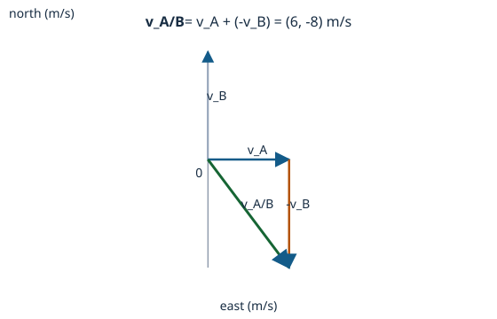

Review preview — scientific and teaching approval remains pending.
Relative velocity in a plane · CORE1B
Relative velocity in a plane
Intrinsic concept difficulty: HARD
Read these before anything that uses them.
Two directions are fixed for the whole bucket: x counts east and y counts north. A number written against x with a minus sign means west, and against y it means south.
A quantity written A/B is A measured from B. The order belongs to the quantity and is not a label attached afterwards.
A number alone does not say where something is.
You and a friend are each asked where the same chair is, and you both answer "four paces". Before reading on: does that mean you agree?
Then produce:
A sketch of a room with two starting places marked, and one chair that is four paces from both.
Check your answer
Our answer: Not necessarily. Four paces from one starting place and four paces from another put the chair in two different places, and nothing said so far rules that out.
Getting there:
1. You counted four. What did you start counting from?
2. Your friend also counted four, starting somewhere else. Is the chair in the same place in both answers?
3. Say your answer again, this time in a way your friend could use to walk to the chair.
4. What did you have to add, and why could the number not do that job on its own?
A common wrong idea:
Position is a property the object carries with it.
Tell them apart:
Two people give different answers for where the same chair is. Can both be right?
Instead:
Say what you measured from, then give the number; the number alone is not the answer.
Judge your answer against these:
- Two different starting places are marked, and the chair is four paces from each.
It shows:
Holding both counts as correct at once, rather than deciding one of them must be a mistake.
- Each answer is written out with the place it was counted from attached.
It shows:
Treating what it was measured from as part of the answer rather than as background.
Accepted:
Two starting places marked -- say the door and the window -- with the chair drawn four paces from each, and both answers written out as "four paces from the door" and "four paces from the window".
Not accepted:
One starting place marked and the second answer treated as a miscount to be corrected. The sketch then shows one place for the chair, so the collision that makes the bare number look incomplete never appears, and the learner leaves agreeing with a rule they were told rather than one they hit.
Someone says the chair is four paces from the door. The next day the door has been moved. Is the description still right?
Check your answer
It is no longer usable, and that is the point: the description was never about the chair alone. It held for as long as what it was counted from stayed put.
What this settles:
That what a place is measured from is part of the description, not a detail outside it.
Position measured from the other object.
A is at (7,2) m and B at (3,5) m, both measured from the same origin. Before subtracting anything, predict which way you would walk to get from B to A -- east or west, north or south?
Then produce:
A sketch of origin, B and A with an arrow from B to A, and the two signs you expect the answer's components to have.
Check your answer
Our answer: East and south. A is further east than B and lower on the north axis, so the walk is east and south whatever the arithmetic turns out to be.
Getting there:
1. Put your finger on the origin, then on B, then on A. Which two of those three moves does the question actually ask about?
2. Write the trip origin to B, then B to A, as one journey. What is the whole journey equal to?
3. You now have r_A = r_B + r_A/B and you want r_A/B on its own. What do you do to both sides?
4. Do the signs of your answer match the direction you predicted before you started?
A common wrong idea:
Subtract whichever coordinate appears first in the question.
Tell them apart:
Which displacement carries you from B to A?
Instead:
Draw origin → B → A and reconstruct r_A = r_B + r_A/B before subtracting.
Judge your answer against these:
- The arrow is drawn from B to A, and the tail is the object the question measures from.
It shows:
Reading 'A relative to B' as a displacement with a starting point rather than as an instruction to subtract.
- The predicted signs are read off the sketch before any subtraction is performed.
It shows:
Having a check the arithmetic can be measured against rather than being the only answer.
Accepted:
Arrow from B to A, pointing right and down; components predicted positive east and negative north, because A is to the right of B and below it.
Not accepted:
Arrow from A to B, with the note that the order can be fixed at the end by changing the signs. The signs would indeed come out reversed, and the learner has no way to notice that they were.
Now give B relative to A for the same two positions. What has changed, and what has not?
Check your answer
(-4,3) m: 4 m west and 3 m north. Every component has reversed sign; the length of the arrow is unchanged.
What this settles:
That the order in 'A relative to B' is carried by the whole vector and not by which number was written first.
From relative position to relative velocity.
A walks east at 3 m/s and B walks north at 4 m/s. Predict the speed of A as seen by B, and say whether you can get it by subtracting 3 from 4.
Then produce:
The relative velocity as a pair of signed components, and then its magnitude, with a note on which of the two the question asked for.
Check your answer
Our answer: 5 m/s, and no. The two motions are at right angles, so nothing cancels; subtracting the speeds throws away the directions that decide the answer.
Getting there:
1. Write down where A is relative to B at the start of the second, and again at the end of it.
2. Subtract the first from the second. Whose displacements appear in what you are left with?
3. You have a change in separation over one second. What do you divide by, and why is it the same number for both objects?
4. Go back to A east at 3 and B north at 4. What do your components say now, and is it 1?
A common wrong idea:
Subtracting the two speeds always gives relative speed.
Tell them apart:
If one object moves east and the other north, do their directions disappear?
Instead:
Compute signed vector components first, then take the magnitude if requested.
Judge your answer against these:
- Components are subtracted axis by axis before any magnitude is taken.
It shows:
Treating velocity as a pair of numbers that must both survive the subtraction.
- The answer says whether it is a velocity or a speed, and does not offer a magnitude where a direction was asked for.
It shows:
Knowing that a magnitude is something computed from the answer, not the answer.
Accepted:
v_A/B = (3,0) - (0,4) = (3,-4) m/s; its magnitude is 5 m/s. A appears to B to move east and south.
Not accepted:
4 - 3 = 1 m/s. The arithmetic is right and the two directions were dropped before it was done, which is what made the answer wrong rather than the subtraction.
A and B both walk east, A at 5 m/s and B at 5 m/s. What is v_A/B, and what does B see?
Check your answer
(0,0) m/s. B sees A holding still, at a fixed distance, even though both are moving quickly over the ground.
What this settles:
That relative velocity is about the separation changing, not about either object being still. A learner who reads 'zero velocity' as 'not moving' is caught here.
Check direction, magnitude and observer reversal.
You have worked out that v_A/B points southeast at 5 m/s. Predict, without calculating, what v_B/A is -- both its direction and its size.
Then produce:
The two arrows drawn on one sketch, with the observer named beside each and their lengths compared.
Check your answer
Our answer: Northwest, at 5 m/s. Swapping the observer reverses the arrow and leaves its length alone.
Getting there:
1. Draw v_A and v_B from the same point. Which of the two do you have to turn around before adding?
2. Slide the reversed arrow so its tail sits on the head of the other. What does the arrow from the first tail to the last head represent?
3. Now reverse the observer: reverse which arrow you turned around, and redraw. What changed about the result?
4. If someone gives you only the number 5 m/s, what can you not answer?
A common wrong idea:
A correct length is enough for a correct vector answer.
Tell them apart:
Would the same arrow reversed describe the same observer statement?
Instead:
Name the observer, label both components and inspect the direction before taking a magnitude.
Judge your answer against these:
- Each arrow is labelled with who is observing, not only with a magnitude.
It shows:
Treating the observer as part of the answer rather than as context for it.
- The two lengths are stated as equal, and the two directions as opposite, rather than one being recalculated.
It shows:
Reading reversal as a property of the vector instead of a second problem.
Accepted:
Two arrows from one point, one southeast labelled 'A as seen by B' and one northwest labelled 'B as seen by A', drawn the same length.
Not accepted:
One arrow of length 5 with the note that direction depends on the question. The length is right and the answer has no observer in it, which is the whole thing that was asked.
Two cars approach each other head-on, each at 20 m/s along the same line. What is the magnitude of one car's velocity relative to the other, and does reversing the observer change it?
Check your answer
40 m/s. Reversing the observer points the arrow the other way along the line and leaves the 40 unchanged.
What this settles:
That reversal leaves magnitude alone even when the magnitude is not either car's speed -- a learner checking only the number has no way to tell the two observers apart here.

Reading this figure:
- Labelled v_A, v_B and -v_B is
v_A— how fast A goes over the ground, and which way - Labelled v_A, v_B and -v_B is
v_B— the same for B, drawn to the same scale so the two can be compared by eye - Resultant labelled v_A/B, with tail/head and scale is
v_A/B— what B sees A doing: the arrow you land on after reversing B's and following A's